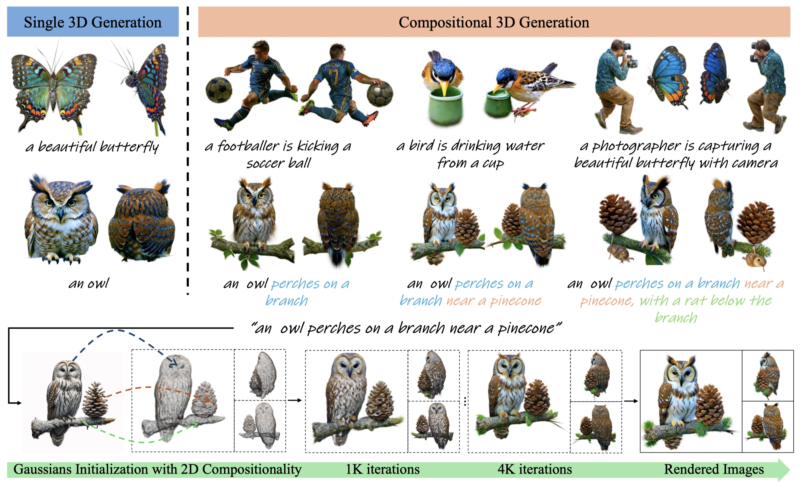
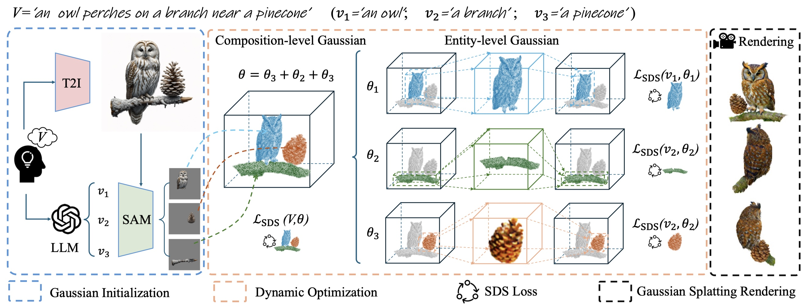
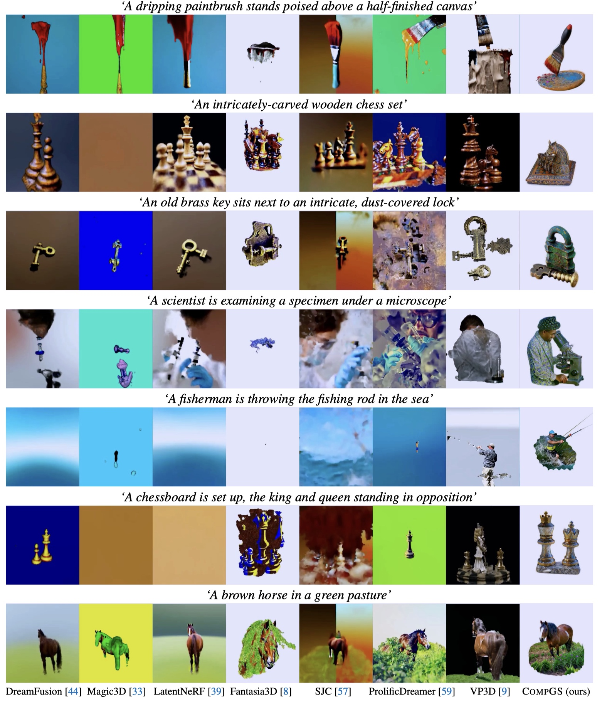
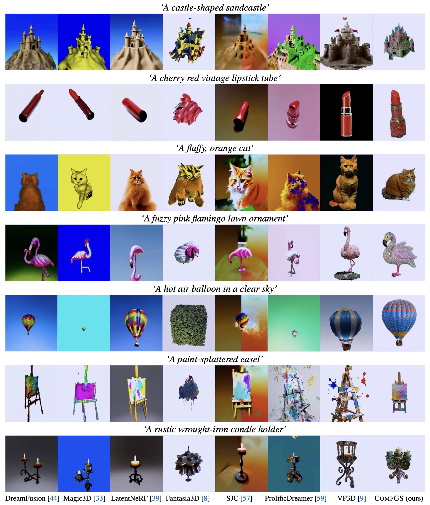
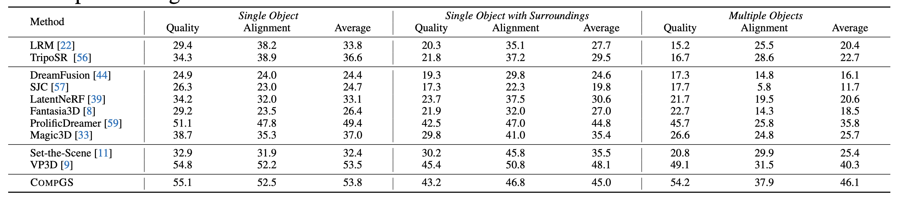
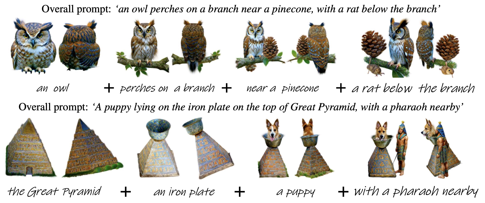

CompGS: Unleashing 2D Compositionality for Compositional Text-to-3D via Dynamically Optimizing 3D Gaussians

Abstract
Recent breakthroughs in text-guided image generation have significantly advanced the field of 3D generation. While generating a single high-quality 3D object is now feasible, generating multiple objects with reasonable interactions within a 3D space, a.k.a. compositional 3D generation, presents substantial challenges.
This paper introduces CompGS, a novel generative framework that employs 3D Gaussian Splatting (GS) for efficient, compositional text-to-3D content generation. To achieve this goal, two core designs are proposed: (1) 3D Gaussians initialization with 2D compositionality: we transfer the well-established 2D compositionality to initialize the Gaussian parameters on an entity-by-entity basis, ensuring both consistent 3D priors for each entity and reasonable interactions among multiple entities; (2) Dynamic optimization: we propose a dynamic strategy to optimize 3D Gaussians using Score Distillation Sampling (SDS) loss. CompGS first automatically decomposes 3D Gaussians into distinct entity parts, enabling optimization at both the entity and composition levels. Additionally, CompGS optimizes across objects of varying scales by dynamically adjusting the spatial parameters of each entity, enhancing the generation of fine-grained details, particularly in smaller entities.
Qualitative comparisons and quantitative evaluations on T3Bench demonstrate the effectiveness of CompGS in generating compositional 3D objects with superior image quality and semantic alignment over existing methods. CompGS can also be easily extended to controllable 3D editing, facilitating scene generation. We hope CompGS will provide new insights to the compositional 3D generation. Codes will be released to the research community upon publication.
Method

Qualitative comparisons: multiple objects

Qualitative comparisons: single object

Quantitative comparisons on T3Bench

Progressive 3D editing

Citation
@inproceedings{ge2025compgs,
title = {CompGS: Unleashing 2D Compositionality for Compositional Text-to-3D via Dynamically Optimizing 3D Gaussians},
author = {Ge, Chongjian and Xu, Chenfeng and Ji, Yuanfeng and Peng, Chensheng and Tomizuka, Masayoshi and Luo, Ping and Ding, Mingyu and Jampani, Varun and Zhan, Wei},
booktitle = {Proceedings of the IEEE/CVF Conference on Computer Vision and Pattern Recognition (CVPR)},
year = {2025}
}